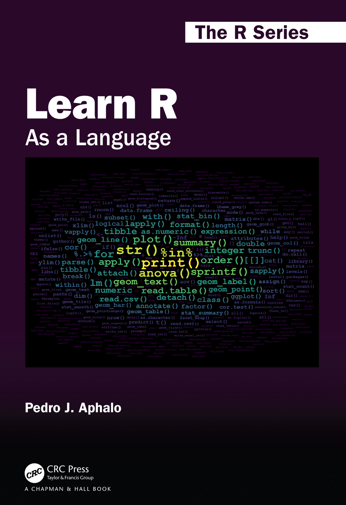
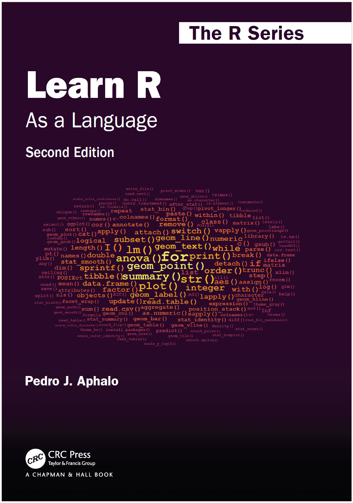
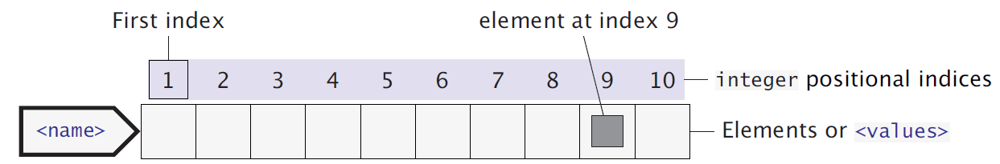
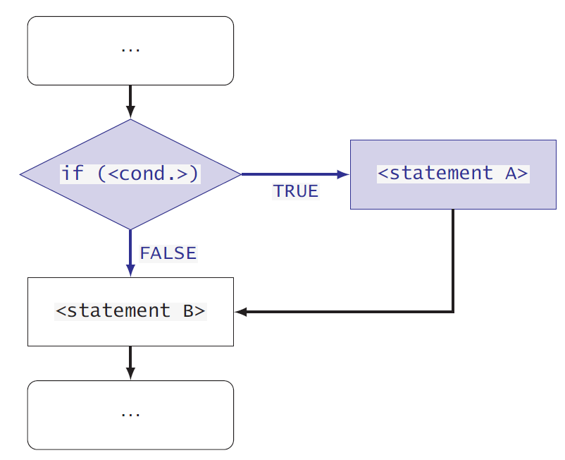

Learn R: As a Language
A book in The R Series
] 
1 The book in a nutshell
The second edition (yellow-red wordcloud cover) of my book Learn R: As a Language has publication date 26 April 2024. The R package ’learnrbook’ available through CRAN contains data and the R code from scripts and chunks in the book. Package ‘learnrboo’ versions >= 2.0.0 support both book editions of the book. I typeset the book using \(\LaTeX\) and R package ‘knitr’. The 2nd edition includes many new diagrams and flowcharts that help explain the structure of R code, the structure of R objects, and the control of execution constructs.


if code constructThe book is published as paperback and hardback printed books and as an eBook. The page count has increased from 364 to 466, and the number of colour illustrations from 114 to 191. The price increase of the paperback is minimal, from 58.99 to 59.99 pounds. The hardback of the 2nd edition at 150 pounds is 5 pounds cheaper than the first edition. The price of the eBook is the same as for the paperback.
The 2nd edition of the book is available from the publisher through the book’s web page at a 20% discount until 22 January 2025 during their January sale.
The book is also available at brick and mortar booksellers and through web stores, at prices that may differ significantly from the publisher’s prices. In addition, taxes vary among countries.
2 News
[8 January 2025] Yesterday, I run all code examples in the book. Everything works, except for one of the examples for package ‘tidync’ (the one at the bottom of page 409). This seems to be the result of a change in the recent update of ‘tidync’ to version 0.4.0. This change looks to me like a bug.
If you would like to have a look at the book before buying it, or you are unable to buy it or to ask for it to be acquired by a library you have access to, a preprint is available at the research portal of the University of Helsinki as a watermarked PDF file.
[April 2024] Second edition published. Supplementary material is now available as web pages at my website with some of the most relevant pages highlighted at the R index page of the site.
[September 2021] I have made available through this website supplementary chapters for the book (over 100 pages). These are typeset using the same design as the book itself and numbering of chapters and pages continues from where they end in the book. These chapters are still work in progress. After further revision I intend to add the code they contain also to package ‘learnrbook’. They are released under a CC-BY-SA 4.0 licence.
[July 2021] Only two small changes to the code chunks are needed to avoid deprecation messages from ‘tidyverse’ packages. The ‘learnrbook’ package (1.0.2) adds the R code for all code chunks in the book as executable and editable .R files. Additional material related to my ‘ggplot2’ extensions is available in the vignettes of my packages ‘gginnards’, ‘ggpp’ and ‘ggpmisc’, all available through CRAN.
3 Issues
Reports of errors and suggestions for enhancements are welcome, preferably as Issues raised at https://github.com/aphalo/learnr-book-crc/issues; the source of the book is at https://github.com/aphalo/learnr-book-crc.